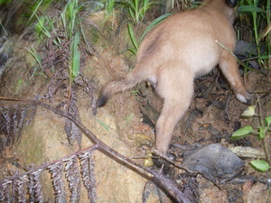

awè 
/ʔawɔʔ/
v_rt.
“remove/leave”
1.
vi.
for someone or something (eg-awè, mig-awè/in-awè, awè, agent, eg><ø-) to leave or depart
Eng. leave; depart; go away; move away
Online dict status: -
Usage level: F
vt.
for someone (eg-awè, mig-awè/in-awè, awè, agent, eg><ø-) to remove something (eg-aween, in-awè/mig-awè/pig-awè, aween, theme, eg><en-) from another thing (eg-awaan, location, eg><an-)
Wrd.Gloss: remove
Cult. e.g., can be used when vegetables are brought in a basket
Aween ka basak
Remove the mud
Nekey-a ka eg-aween nu due te kumbalè nu?
What are you going to remove from your dress?
In-awè ka butinis tè kumbalè din
She removed the buttons from her dress.
Ka kumbalè din eg-awaan din te butinis
She removed the buttons from her dress.
Eng. remove; take away; strip away
Online dict status: -
Usage level: F
v.
for something (egkaawè, naawè, actor, egkA><ø-) to be taken away
Egkaawè bu red ka malindit seini te kumbalè ku?
Would this dirt in my dress be removed?
Eng. taken away; removed; withdraw; pass away; go away; disappear; come off; alleviate
Online dict status: -
Usage level: F
v.
for someone (agent) to remove something (igpaawè, impaawè, patient, ig><ø-pA-) from another thing
Igpaawè kun ni Badda ka ilab due te baag nu.
Badda said that you should take your knife out of your bag.
Eng. migrate; remove; put away; take away
Tag. alisín
OCM: Domesticated Animals (231), Personal Hygiene (515)
Online dict status: -
Usage level: F
v.
for someone (igpaawè, impaawè, agent, igpA-) to drive away or release an animal
Data Qual: check this gl
cf. alew
Syn. igpalekè
Igpaawè kud ka bayaku puun te kulungan.
I will set this bird free from it's cage.
Eng. drive away; banish
Tag. palayásin
Ceb. abug; palayason
Ilo.: palayásen; papanáwen
OCM: Social Relationships and Groups (571), Inter-community Relations (628), Social Offenses (689)
Online dict status: -
Usage level: M
v.
for someone or a place (eg-awaan, mig-awaan/in-awaan/pig-awaan, awaan, eg><an-) to leave (something) behind
Data Qual: this meaning is unclear
Eg-awaan kun ni Milda ka hemey ne igbehey ki Adung.
Milda is going to take some of the rice that she is going to give to Adung.
Eng. leave behind; take some
Tag. maíwan
OCM: Acquisition and Relinquishment of Property (425)
Online dict status: c
Usage level: M
2.
vi.
for someone (eg-awè, mig-awè/in-awè, awè, agent, eg><ø-) to leave or migrate
Eg-awè kun e sikandin kayi te Simud.
She will migrate from Sinuda.
Eng. leave; depart; withdraw; go away
Online dict status: -
Usage level: F
vi.
for someone or something (egpakaawè, nakaawè, agent, egpAkA-) to escape
Eng. escape; get away; run away; break out; jailbreak
Online dict status: -
Usage level: F
3.
vt.
for someone or something (egpangawè, migpangawè/impangawè, eg><ø-paN-) to remove many things
Eng. remover
Online dict status: c
Usage level: M
4.
v.
for a woman (egkaawaan, naawaan, actor, egkA><an-) to miscarry
Eng. miscarry; lose baby; baby, lose; still birth
DDP: Birth (2.6.3)
Online dict status: -
Usage level: R
Updated by: RJH,JLM,RJH,RMU,RJH,QDL,RJH,QDL,RJH,NJK,RJH
Last updated: 15/Sep/2014
"impakaawe" in text "Two carabaos fighting"
"pangawe" in text "A day's activities"
"awe" in text "Aurelio's Marriage"
"egpakaawe" in healthbook "Mania te keilangan neg lu-luan ta ka me belad ta?"
"kaawe" in healthbook "Migpamawian ni Inuk ka sumbaley rin ne migpangaliskis"
"eg-awaa" in healthbook "Migpamawian ni Inuk ka sumbaley rin ne migpangaliskis"
"naawaan" in healthbook "Mania teg pakapatey kag iindes?"
"kaawe" in healthbook "Mania teg pakapatey kag iindes?"
"In-awe" in song "Diye te krus"
"egpakaawe" in song "Legpad ku ne langun"
"egkengaawe" in song "Me sundalu ni Kristu"
This page last updated: 03-Jan-2020
Copyright © 2009-2014, Matigsalug Language Christian Association, Inc